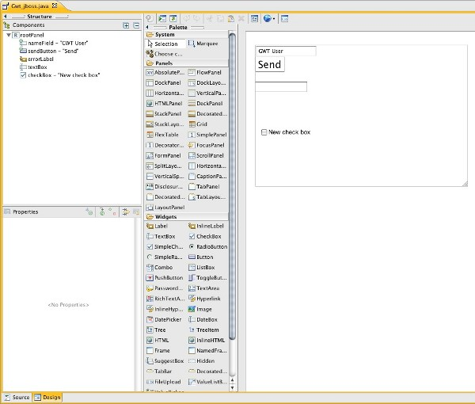

< Main Index Teiid Designer >
You can now edit your GWT pages with the Google GWT Designer. All you have to do is install the GWT Designer. Any project we create with our WTP facet is ready to be edited with this great WYSIWYG editor.

Related Jira